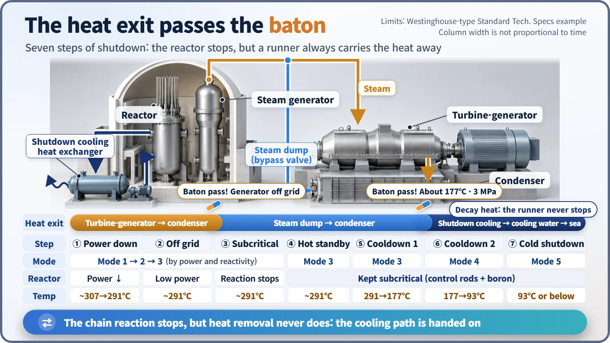
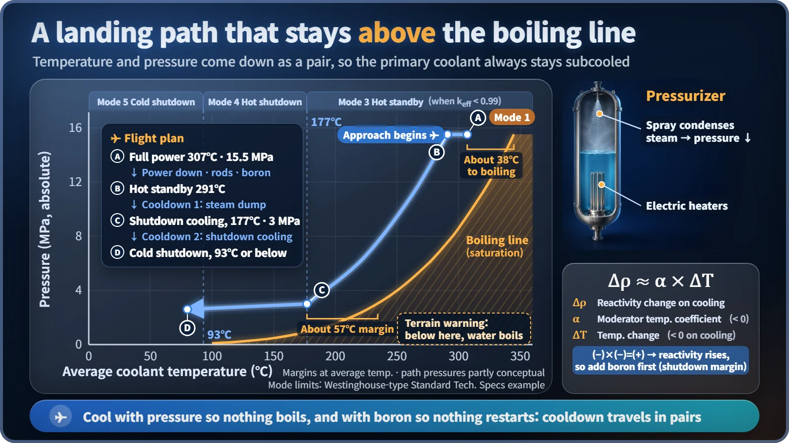

Plant Operation, Control & the Grid · 237
Not a Switch but a Landing — The Big Picture of Nuclear Plant Shutdown
Stopping the chain reaction takes seconds. Bringing the plant down safely, with the heat always flowing out, takes about a day.
Shutting down a pressurized water reactor is a staged landing, not a switch: power comes down, the generator leaves the grid, rods and boron make the reactor subcritical, and the plant is then cooled and depressurized step by step to cold shutdown. Two jobs run side by side the whole way: keep the chain reaction stopped, and keep removing decay heat. [1]
Not a rewind, but a landing
If you filmed a nuclear plant starting up and played the video backward, would you be watching it shut down? Half right. The big steps really are a mirror image. The other half is the interesting part: there are two scenes you'd never get from the rewind button. One is the medicine that goes in before cooling down. The other is the heat that keeps coming after the reactor is off.
So the scene that best resembles a plant shutdown is an airliner landing. Pilots don't switch off the engines in mid-air. They lose altitude bit by bit, touch the wheels down, hit the brakes and roll slowly to the gate, and only then shut the engines down. Even after the plane stops, the red-hot brakes need a long time to cool. A nuclear plant comes down in exactly this way.
Shutdown comes with two jobs
Shutting down a nuclear plant means solving two very different problems at the same time.
The first is the reactivity job. Reactivity is a measure of how strongly the fission chain reaction is trying to grow. You have to lower it to stop the chain reaction (a state called subcritical) and then keep enough margin that it can never come back to life. There are two tools: control rods, which soak up neutrons, and boron, a neutron-absorbing substance dissolved in the cooling water.
The second is the heat job. Even after the chain reaction stops, the fission fragments piled up in the core keep decaying and giving off heat. This is decay heat. Right after shutdown it still amounts to several percent of the original thermal power, so an exit for that heat must stay open the whole way down.
From cruising altitude to the gate in seven steps
Here, roughly, is how a pressurized water reactor (the type used for most reactors in South Korea, which keeps its water from boiling under high pressure) is shut down ahead of planned maintenance. [2]
- Reduce power — the descent. Steam to the turbine is cut back gradually, and reactor power is brought down to match using control rods and boron. Abrupt changes would punish the equipment with rapid temperature swings, so this usually takes several hours.
- Take the generator off the grid — once power is low, the breaker opens and the turbine is stopped. Electricity production ends here.
- Make the reactor subcritical — hitting the brakes. Control rods go in to stop the chain reaction, and the boron concentration is raised to secure margin.
- Hot standby — taxiing to the gate. The reactor has stopped, but the coolant is still at about 291°C and about 153 atmospheres (15.5 MPa). Decay heat makes steam in the steam generators, and that steam goes through bypass valves called steam dumps to the condenser instead of the turbine.
- First-stage cooldown — more steam is drawn off to lower the temperature, and pressure comes down with it, to about 177°C and about 3 MPa.
- Second-stage cooldown — the shutdown cooling system takes the baton: dedicated equipment that pumps reactor coolant out directly and cools it in heat exchangers.
- Cold shutdown — the average coolant temperature is about 93°C or below and the plant is stable. Maintenance and refueling start here.

The mode boundaries of 177°C and 93°C come from the US Standard Technical Specifications for Westinghouse-type plants and can differ slightly by reactor type. Add it all up and the whole process usually takes close to a day or longer, not a few hours. [1] [3]
Missing from the rewind, scene 1: boron before cooling
Why add boron before cooling down? When the coolant of a pressurized water reactor cools, the water gets denser, and denser water is better at slowing neutrons down, which actually tilts the reactor toward more fission. In one line:
Δρ ≈ α × ΔT
Δρ is the change in reactivity, α is the moderator temperature coefficient, which says how much reactivity changes per degree (usually negative at PWR operating conditions), and ΔT is the temperature change. Cooling makes ΔT negative, so a negative times a negative means reactivity goes up. That's why the reactivity that will appear while cooling from 291°C to below 93°C is pressed down in advance with boron. During startup it's the other way around: heat up first, then dilute the boron. [4]
Missing from the rewind, scene 2: coming down above the boiling line
Just as a landing plane must always stay above the mountains, a plant's cooldown path has a line it must never cross: the boiling line. Water boils at a higher temperature when the pressure is higher. At 153 atmospheres (15.5 MPa) it doesn't boil until about 345°C, but at a little over 30 atmospheres (3 MPa) it boils at about 234°C. [5]
So temperature and pressure come down as a pair. Pressure is reduced by spraying cold water into the steam space of the pressurizer (a large vessel that holds the primary system's pressure), condensing steam back into water. Even at the 177°C, 3 MPa point, there's a margin of about 57°C to boiling. Dump the pressure first and the hot water would boil; keep the pressure high while dropping the temperature too far and the thick steel reactor vessel could be put under strain. Cooling too fast does the same, so the cooldown rate is limited to within a few tens of °C per hour.

An emergency shutdown just moves one step to the front
What about a reactor trip (emergency shutdown), where the reactor stops in an instant when an alarm sounds? In a trip, all the control rods drop at once within a few seconds, getting step 3 done at the very front. Steps 4 through 7, removing decay heat while cooling down, remain exactly as in a planned shutdown. A trip is a protective action designed in advance, so a trip by itself doesn't mean an accident. But because a planned shutdown lowers power slowly first, it puts far less strain on the equipment.
Even at the gate, the brakes still need cooling
A nuclear plant shutdown runs power reduction → generator off the grid → subcritical → hot standby → first-stage cooldown → second-stage cooldown → cold shutdown, usually over about a day. Control rods handle the chain reaction; boron handles the reactivity that grows as the plant cools. The heat exit passes the baton from turbine to steam dump to shutdown cooling, and it never closes, even after cold shutdown. Behind the single word "off" hides a long landing procedure, and that is exactly why a nuclear plant doesn't rush and always keeps to the order.